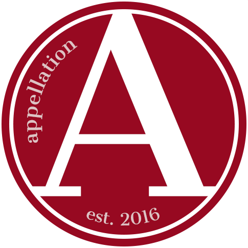
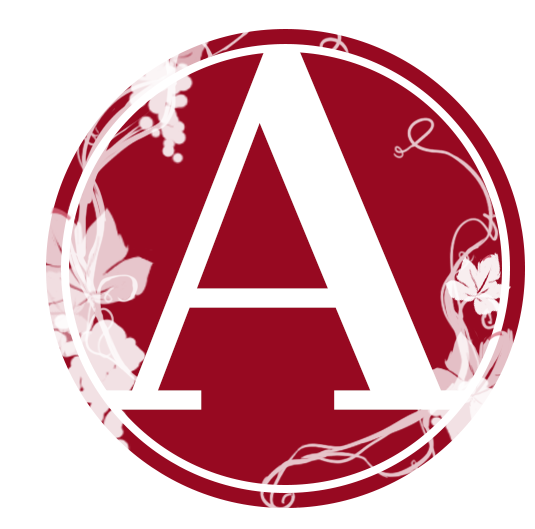
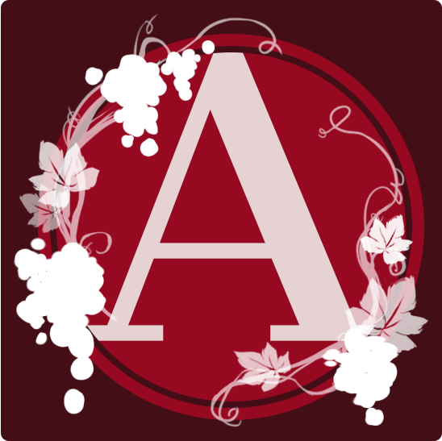

guild logo

This was a small personal project I did for my online game guild. It is used as the server logo, and was designed with the founding ideas in mind. The guild is called "Appellation," after a winery the founder visited. Hence, the logo has a wine/grape theme.



After a few iterations, with input from the guild founder, the final logo was then decided on based on its clarity/readability. The icon, as displayed, is rather small; hence, earlier iterations with smaller and more complex details didn't come across as well.
Adobe Photoshop; September 2021